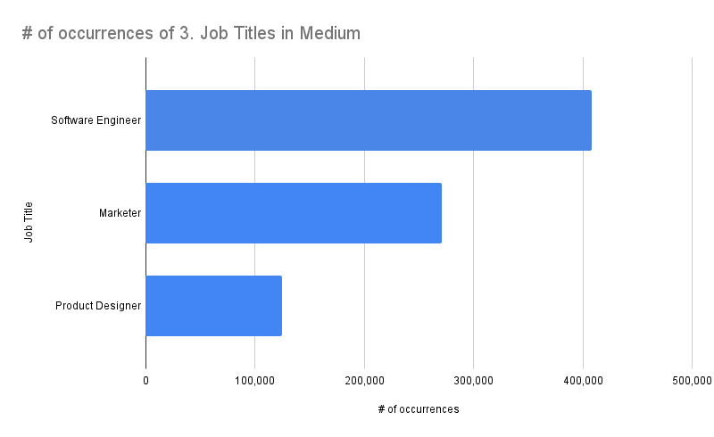
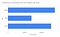
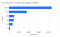
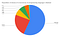
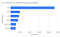
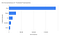
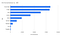
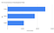
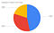

Metrics about Words of Software
Another analysis of words occurrence in Medium

I introduced my last article with this sentence coined by Marc Andreessen Who said that software is eating the world sentence that I questioned by asking if the world isn't already fully into the unfillable stomach of Software. In this article, I will be trying to present you some metrics about the words of software but if you were believing to get global metrics please forgive me because the metrics I will be showcasing you are focused not on the whole wide web but only on Medium this publishing platform that you are actually using for reading this article.
As the first fact of the growing importance of software in whatever thing we are doing every day even writing and publishing articles, you can take into account this first chart below which shows you the number of occurrences of the job title software engineer compared to marketer and product designer.

You can see that The word Software engineer is intensively used by writers in Medium and we can with these metrics guess that there are more software engineers in Medium than other titles but this simple fact cannot prove this last assumption I have made. The word Software occurred nearly more than 14 million times in medium while the word Marketing as we have already seen with this article titled metrics of words of marketing is topping at 4 million while the word Market occurred a bit more than 7 million.

Then as it should now be obvious to you that software is a very important term both in our everyday life and in articles published online and particularly in Medium let’s now try to see what the metrics are for some specific key terms about Software. The first terms that we will be analyzing are programing language names but I should ask you to forgive me because in my analysis I have not included languages like Ruby, Perl, and others. The only languages I have considered are the languages that I thought, maybe wrongly, were more important. Perl is for me an important language that I have not learned but with the regain of the importance of functional programming Perl can be a language worth learning. This article is not about comparing programming language but analyzing occurrences of words of software like programming language name than here are the metrics about the languages I have chosen.


Almost all last surveys about programming languages I have read in the past have highlighted the growing adoption of javascript due to the web revolution and the increasing number of frameworks that use javascript for web development. The growth of javascript has been as far as taking stakes in server operations that was not its first purpose because javascript was first designed as a client-side language executed by browsers. You will see that it is like javascript have exploited this business theory that advises entrepreneur to focus on a niche market before improving to reach a broader market. That’s what javascript did by starting from the niche market of developers needing small client-side operations to be done until being with Node.js this leader of server-side development language that you can see in the following chart that presents the occurrence of backend frameworks in Medium

This chart above shows that Node.js is by far the most popular backend framework at least by its level of interest from writers publishing articles on Medium because the number of occurrences of the word Node.js is 5 times bigger than the number of occurrences of the word Django which is a very interesting python framework that I love using. After Node.js, the other frameworks like Laravel, Express, Ruby on Rails, and Spring Boot drive on average the same level of interest from medium’s writers because their numbers of occurrences are between 50k to 100K.
We have discovered the metrics about the names of backend frameworks but what about Frontend frameworks. Before the chart that shows the number of occurrences of the names of the frontend framework, it is important to notice that almost all these frontend frameworks use javascript as the main language what seems to be one of the facts that explain why javascript is far more popular than the other language that we have studied in the chart about programming language. Here is the chart of the occurrences of frontend frameworks in Medium

Here you can see that React the frontend framework behind Facebook’s tech stack is far more popular in Medium when we consider the number of occurrences of the name React. This should be true if we make an analysis that takes into account the whole internet but I have not enough resources right now to do such kind of analysis and I have already said how resources are scarce for me in this article that was written in a moment of doubt when I thought quitting writing at all. But hopefully, I am still here sharing with you by the medium of writing some knowledge that I think could be useful to you while waiting for this powerful computer that would allow me to jump on my IDE for programming all these games ideas and platforms that I have and I would also share with you. Talking about IDE, here is the chart that shows the number of occurrences of the names of IDE in Medium.

For IDEs, Visual Studio, Eclipse, and Xcode are leading the peloton in front of android studio. Programming is certainly not about the tools like IDE we use but a good IDE can for sure increase the productivity of a software engineer but I will let you make your own judgment about the best IDE because this article is about metrics of words of software.
if you are reading this article you are very likely interested in software or maybe you are a software engineer, I thought that it would be interesting to end it with metrics about software engineering’s role but again these numbers are just about articles published in Medium, not the whole wide web.


I hope this article is useful to you. if you need more metrics about any specific field or topic or metrics about words you use in your own article you can tell me by using this form.